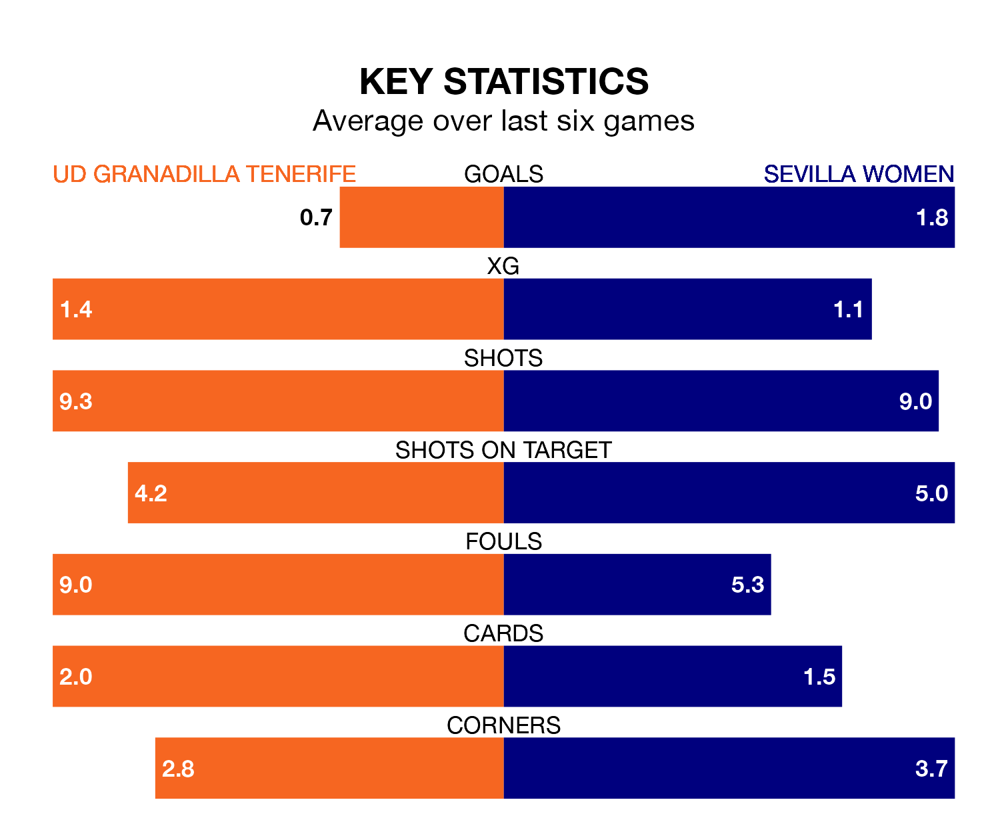

UD Granadilla Tenerife face Sevilla Women at the Estadio La Palmera on Saturday looking to secure a first win in 10 Liga F games.
Granadilla Tenerife have lost four and drawn five matches since they last earned three points – against Granada Women on December 9.
They face a Sevilla side who have won four and drawn three over that time.
With 40 goals in 20 games so far this season, Sevilla are scoring more than average in the league with 2.0 goals per game. But they are conceding more than average too, letting in 35 goals at a rate of 1.8 per game.
Granadilla Tenerife, meanwhile, are below average scorers, with 1.1 goals per game, compared to a league average of 1.5. They have conceded 1.8 goals per game.
In Cristina Martín-Prieto Gutierrez, the away team have one of the league's most on-form strikers so far this season. She has notched 13 goals in 20 appearances, to sit second in the scoring charts.
Her goal rate of one every 133 minutes is quicker than that of Jassina Blom, the hosts' top scorer with a goal every 253 minutes, and a total of five goals in 18 games.
In the last 10 years, Granadilla Tenerife and Sevilla have played each other on 13 occasions. Granadilla Tenerife won eight of them, Sevilla four, and they drew once.
On average, Granadilla Tenerife scored 1.5 goals and Sevilla 1.3 in those matches.
Their last meeting was on October 4, when Sevilla won 5-1 at home.
Sevilla are sixth in the table after 20 games, of which they have won 10 and drawn three, earning 33 points.
Granadilla Tenerife are three places behind Sevilla in ninth, with five wins and six draws putting them on 21 points.
Granadilla Tenerife's last match was on Sunday, a 7-0 loss against Barcelona Women.
Sevilla beat Levante Las Planas 3-0 last time out, on Saturday, with Allegra Poljak (own goal), Cinthia Pamela González Medina and Martín-Prieto Gutierrez on the scoresheet.
Updated: 10:19 (UTC), 22/03/24